Şahmelik Kasabası Antik Yerleşkeleri
Kayseri ili Develi ilçesine bağlı olan Şahmelik kasabası, Develi’nin güney doğusunda yer almaktadır, Develi – Bakırdağı yolu üzerinde yer alan bu kasaba oldukça ciddi boyutta kaya mezarları ve antik yerleşkelere ev sahipliği yapmaktadır.
Kasabanın içerisinde geçerken ana yol kenarında sizi yönlendiren tabelayı göreceksiniz, tabelayı takip edip ana yoldan ayrıldıktan sonra tekrar ikinci bir tabela ile yönlendirileceksiniz, bu yol sizi doğrudan kaya mezarları ve antik yerleşkelere götürecek.
İlk durak Gölceğiz kaya mezarları. İrili ufaklı 20 civarında kaya mezarı bu kaya duvarlarda yer alıyor, herhangi bir sembol, kültür işareti bulamadım, giriş kapısı, bacası ve içerisinde bir kademe yükselen taş set (sanırım ölü beden buraya konuluyormuş) ile kaya mezarları yan yana dizilmiş şekilde burada görülebilir. Hangi medeniyete ait olduğunu bilemiyorum ama Develi havzasında Hititlerin ve Friglerin yaşadıklarını duymuştum, bu iki milletten birine ait olabilirler, kaya mezarlarının üst tarafında ise su kanalını andıran zeminde oyma taş bloklar gördüm.
Gölceğiz kaya mezarlarını ziyaret ettikten sonra yol bizi kuşluklara götürdü, burada çok büyük kuşluklar gördüm. Ayrıca hemen yanı başında belki 30 tane kaya mezar daha gördüm.
Buradan sonraki durak adını bilmediğim bir antik yerleşke oldu. 200-300 metre uzunluğunda 20 metre yüksekliğinde bir kaya blokuna oyulmuş bir şehir idi burası. Bir taraftan girip diğer taraftan çıkmak mümkün oldu ve içeride irili ufaklı çok sayıda yer altı gıda ambarı boşlukları gördüm.
Bir sonraki durak merdivenli asma şehir adı verilen, uzunca bir demir merdiven ile tırmanılan bir antik yerleşke oldu, burada bir önceki yerleşkeye benziyordu.
Buradan sonrasına araba ile gidilemediği için döndük, çobanların anlattıklarına göre bu vadinin devamında bu tarz yerleşim yerleri devam ediyormuş.
Eğer gitmeyi düşünüyorsanız aşağıda fotoğrafları ve haritayı paylaşıyorum ve altı yüksek bir araç ile gitmenizi tavsiye ediyorum (yol bozuk)
Gölceğiz Kaya Mezarları:
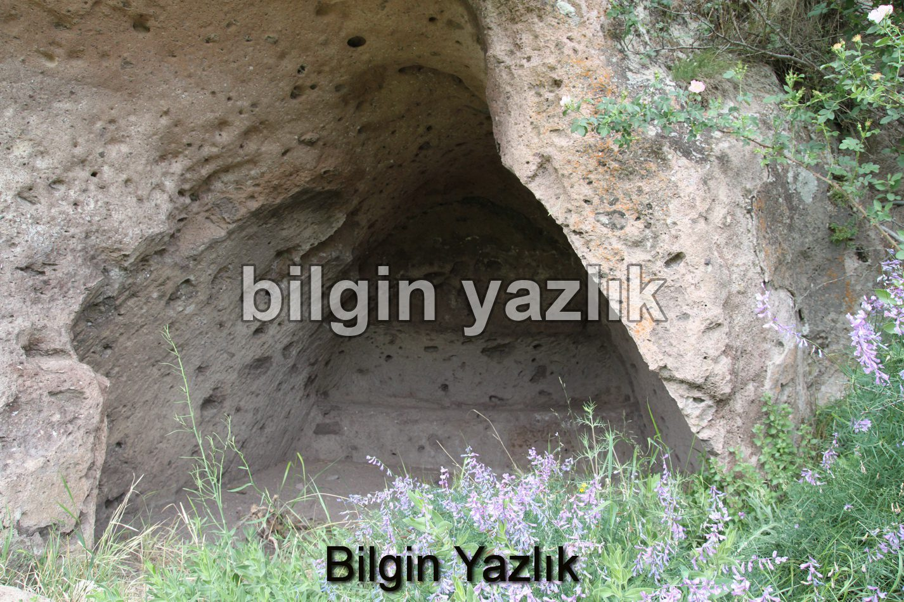
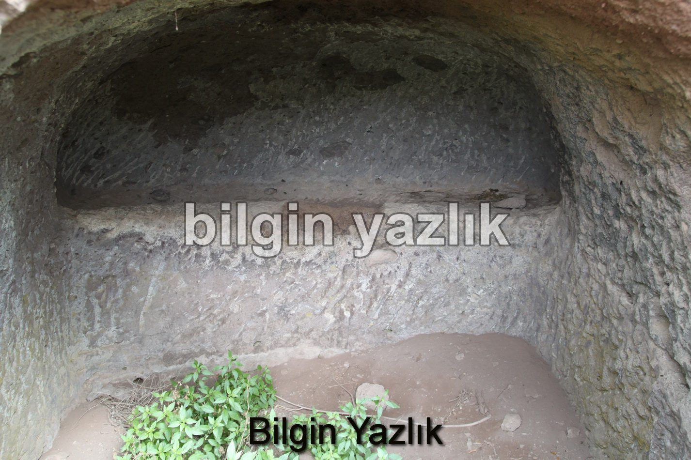
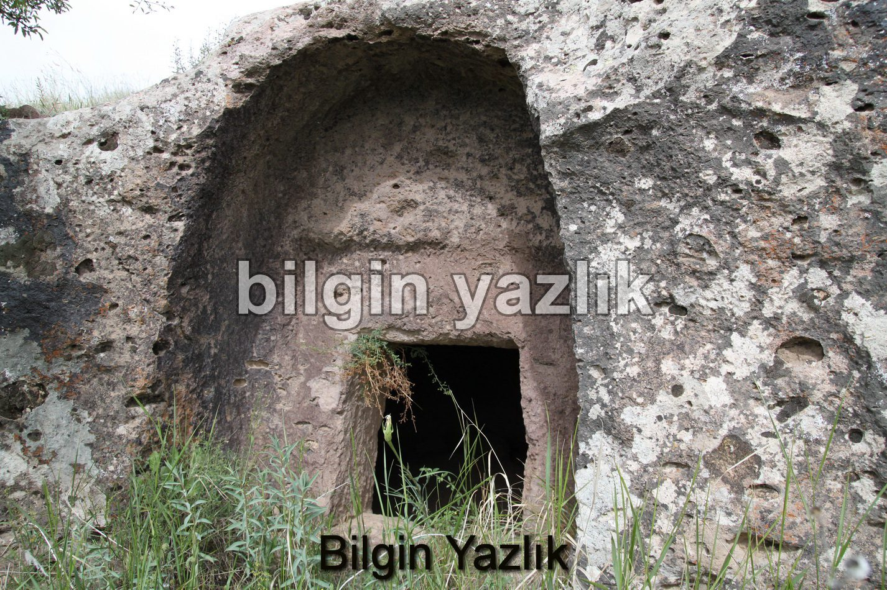
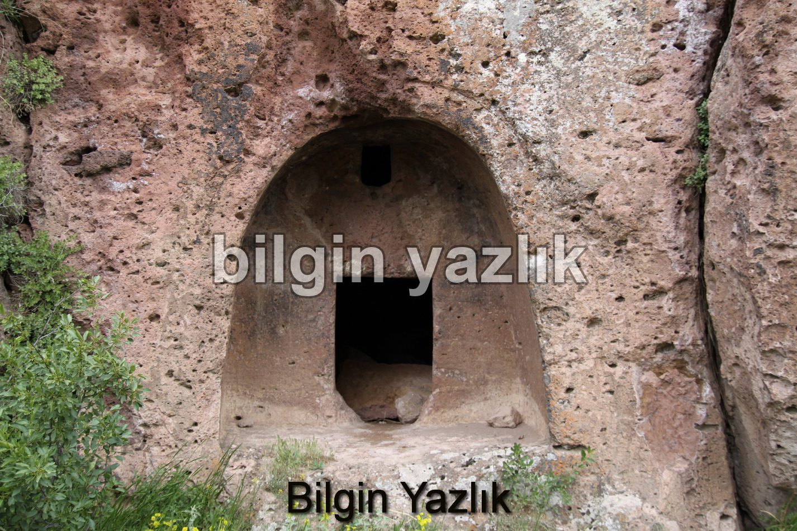
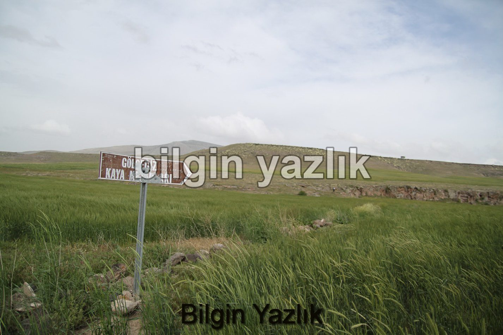
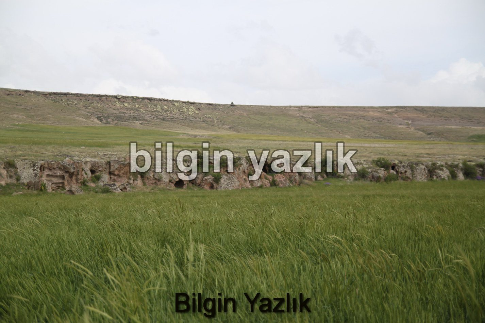
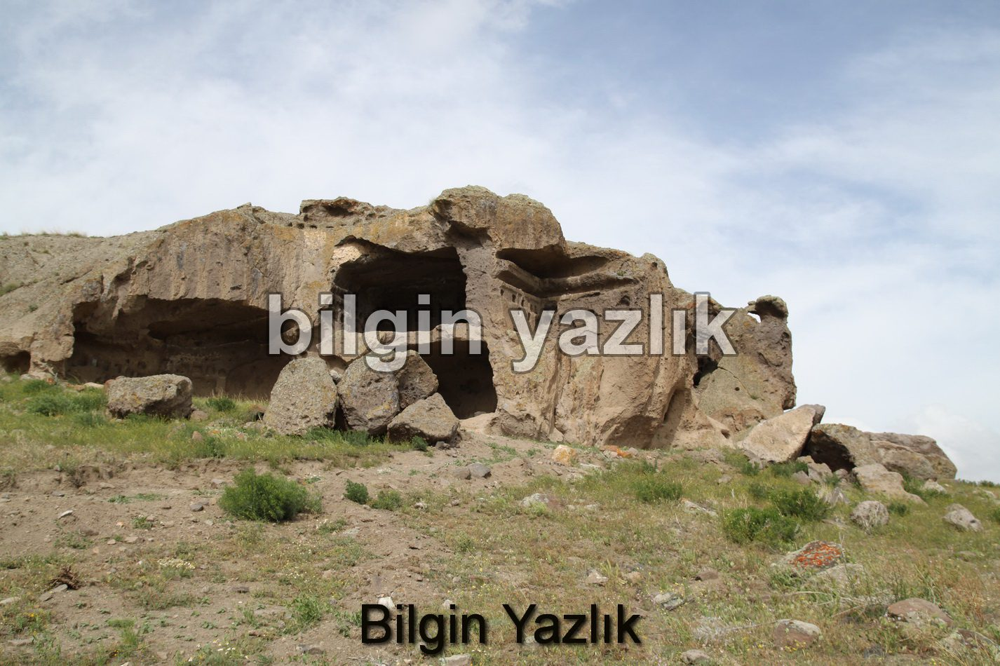
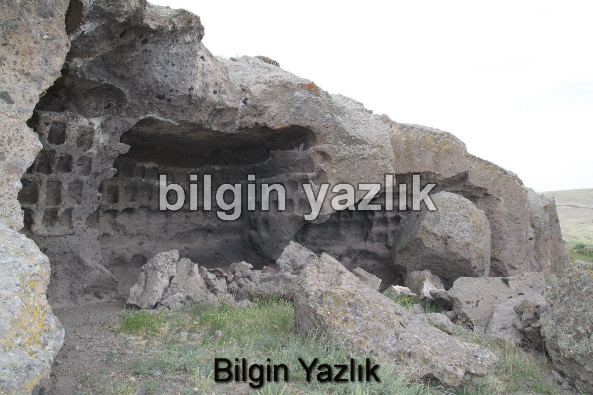
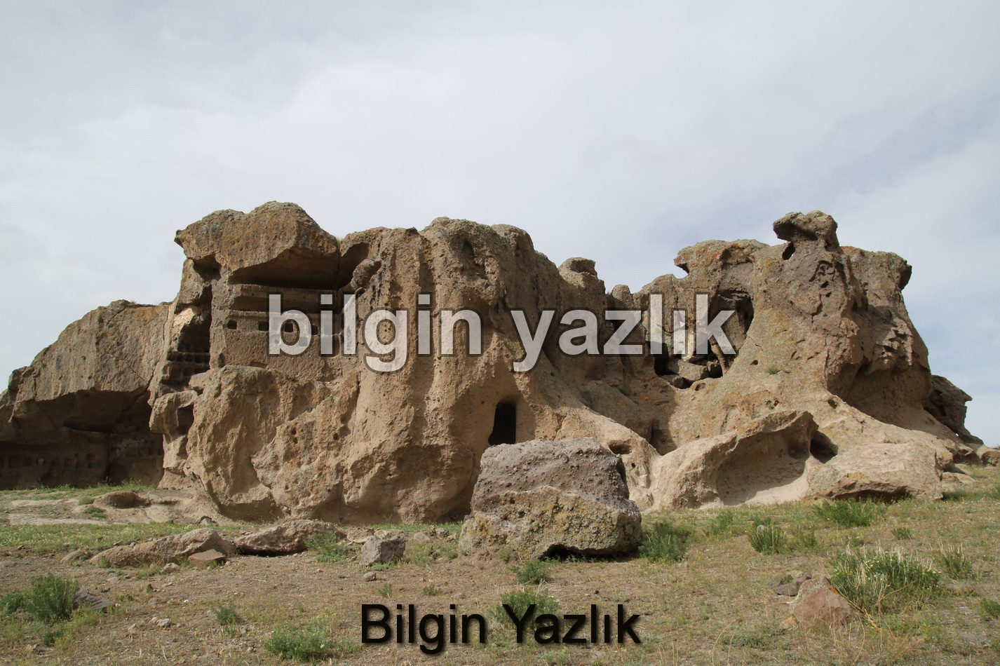
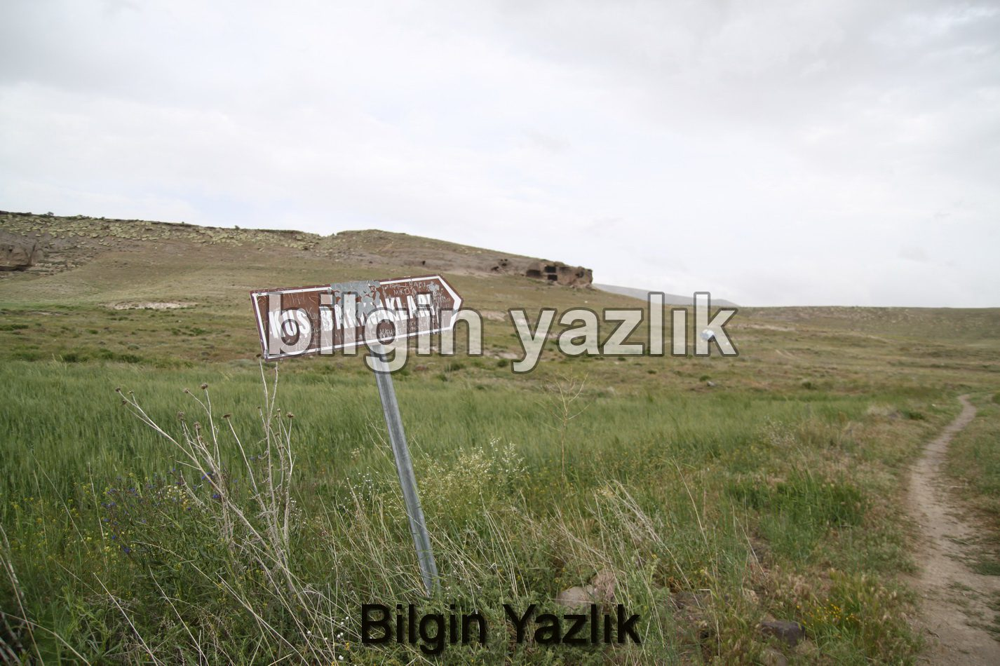
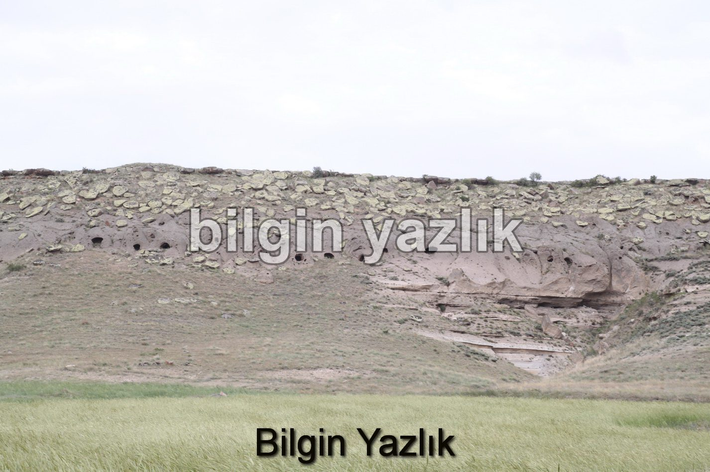
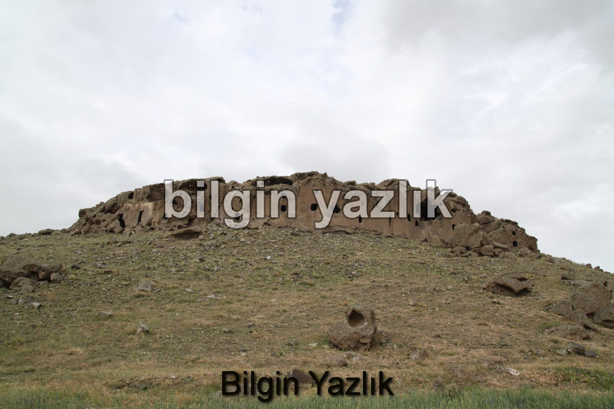
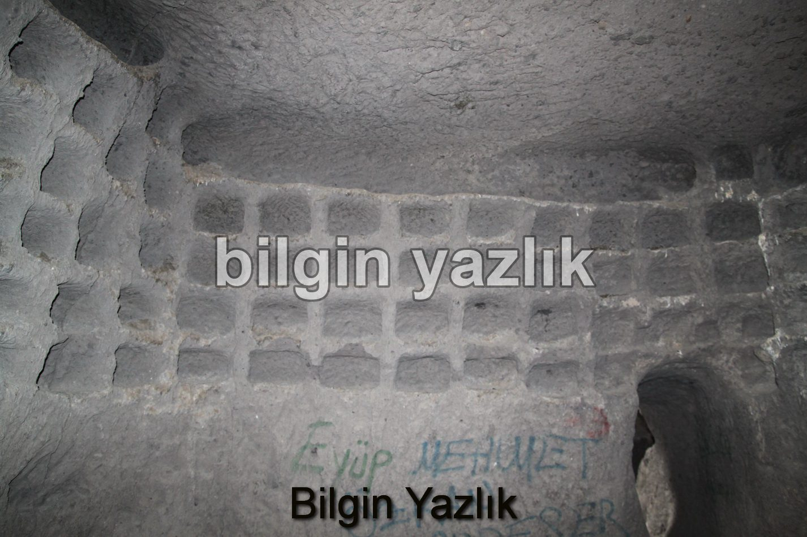
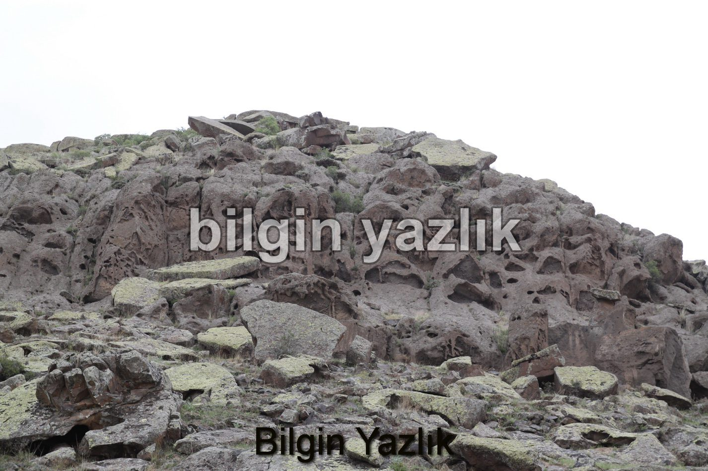
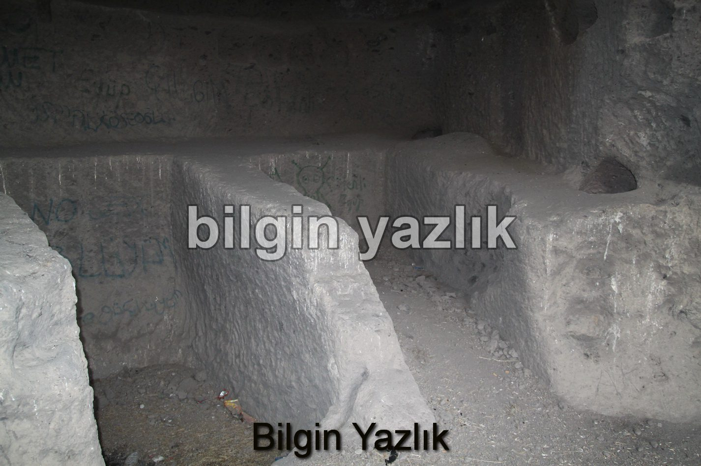
Bu yazı taliyol arşivinden taşınmıştır. · özgün kayıt